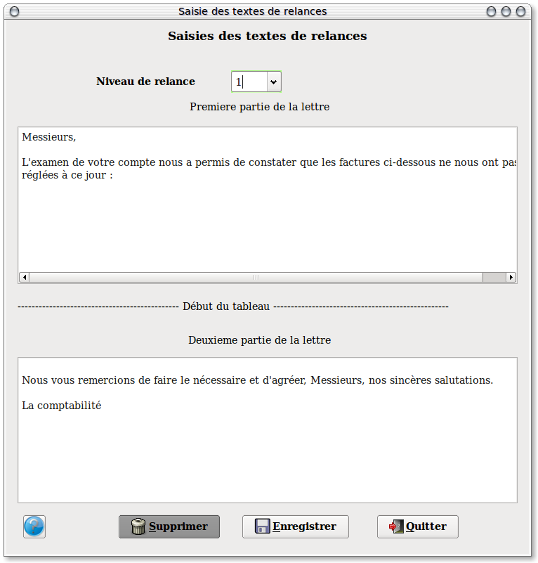

~ Comptabilité Laurux ~

~ Comptabilité Laurux ~ |
|
|
|
Les textes de relances sont gérés sur trois niveaux.
Le tableau est divisé en deux parties. La partie haute va recevoir le texte de début de relance et la partie basse le texte de fin de relance, à l'édition les deux textes seront séparé par un tableau contenant le détail des écritures ( Voir paragraphe sur les éditions).

En premier, il faut saisir le niveau du texte de relance en cliquant sur le bouton. Par défaut le niveau 1 est proposé.
Saisir votre texte en validant en bout de chaque ligne. Vous pouvez saisir dix lignes maximum.
----------------------------------------------------------------------------------------------------------------------